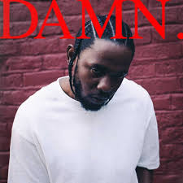
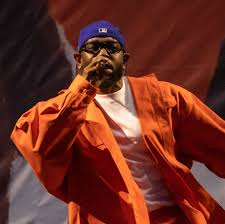

Kendrick Lamar Duckworth nació el 17 de junio de 1987 en Compton, California. Es el hijo de Paula Oliver, una empleada de McDonald's, y Kenny Duckworth,
un empleado de KFC. Sus padres eran provenientes del lado sur de Chicago y se mudaron a Compton tres años antes del nacimiento de Kendrick debido
a que su padre empezó a afiliarse con los Gangster Disciples, una pandilla callejera y prisionera. |
|
Lamar es el hijo más grande de cuatro niños, y fue nombrado por el cantante Eddie Kendricks de la banda The Temptations. Fue criado en una familia
afroamericana de clase trabajadora, viviendo en casas alquiladas bajo el plan social Sección 8 para hogares de bajos recursos, y dependiendo de programas
de asistencia social del gobierno. A pesar de que Kendrick nunca fue miembro de una pandilla, creció alrededor de personas que eran afiliadas a los Bloods. |
 |
Lamar empezó a interesarse por la música cuando tenía cuatro años, después de escuchar discos de hip-hop que sus padres ponían en sus fiestas hogareñas.
Algunas de sus primeras memorias de su niñez incluyen ver a su padre y a su tío robando tiendas durante los disturbios de 1992 en Los Ángeles. |
|
Kendrick acredita a los disturbios de darle un mejor entendimiento sobre la brutalidad policial luego de conocer el apaleamiento a Rodney King.
Lo apodaron como "Man-Man" porque se comportaba como un adulto siendo apenas un niño; este apodo sería utilizado luego como una referencia en sus
canciones "HUMBLE." y "family ties".Cuando tenía cinco años, Kendrick presenció su primer asesinato cuando estaba sentado afuera de su apartamento. |
|
Lamar ha ganado veintidós Premios Grammy. En 2014, recibió siete nominaciones a la 56. entrega de los Premios Grammy, incluyendo una nominación
para el Álbum del Año, para good kid, m.A.A.d city. En 2015 durante la 57. entrega de los Premios Grammy, Lamar con su sencillo "i" ganó dos Premios
Grammy, Premio Grammy a la Mejor Interpretación de Rap y Premio Grammy a la Mejor Canción de Rap. En 2016 se celebró la 58° ceremonia de los Grammy,
donde Lamar recibe su segunda nominación para Álbum del Año por To Pimp a Butterfly y obtuvo los galardones Grammy a la mejor canción de rap y Mejor
Interpretación de Rap por su tema "Alright". |
|
En abril de 2015, Lamar se comprometió con su novia Whitney Alford. Es el primo del jugador de la NBA, Nick Young, además de ser primo del rapero
Baby Keem. Solía fumar cannabis hasta el 2012, pero desde entonces ha dejado de hacerlo.
Al igual que Dr. Dre, asistió al Centennial High School en Compton. Lamar fue un buen estudiante, lo cual lo ayudó mucho en crear sus propias
letras de rap. Ha mencionado muchas veces que su pasatiempo preferido es escribir, para ello comienza haciendo poemas, los que al final terminan
por ser canciones de rap. |
|
| Disputa con otros artistas: Aunque no es conocido por generar muchas disputas públicas, Kendrick tuvo una confrontación con el rapero Drake en 2013
cuando lanzó su verso en "Control" (de Big Sean), donde hizo referencias directas a ser el mejor del juego y desafiaba a varios raperos, incluyendo
a Drake, lo que alimentó rumores de rivalidad. |
|
Más tarde, admitió en una entrevista que el suceso "me provocó algo en ese momento. Me hizo pensar que no era algo que solo estaba viendo,
sino que era algo que quizás debía estar acostumbrándome a ver". Tres años después, presenció su segundo asesinato cuando estaba volviendo
a su casa de la escuela. |
|
Inicios (2004-2009)
En 2004, a la edad de 16 años, Lamar lanzó su primer proyecto de larga duración, un mixtape titulado Youngest Head Negro in Charge
(en español El Jefe Negro Más Joven a Cargo), bajo el seudónimo de K-Dot.25 El mixtape obtuvo reconocimiento local para Lamar, lo que le llevó
a ser firmado por la compañía discográfica independiente Top Dawg Entertainment.26 Con ellos empezó a grabar nuevo material discográfico y por
consiguiente lanzó un mixtape de 26 canciones en 2005, llamado Training Day.27
|
|
| Entre 2006 y 2007, Lamar aparecería junto a otros raperos crecientes de la Costa Oeste, Jay Rock y Ya Boy, como teloneros del reconocido rapero
The Game. Bajo el seudónimo de K-Dot, colaboró en las canciones de The Game "The Cypha" y "Cali Niggaz". |
 |
En 2008, Lamar apareció en el vídeo musical del sencillo debut de Jay Rock, "All My Life (In the Ghetto)", el cual contaba con la colaboración
de la leyenda del rap Lil Wayne. Lamar ganó aún más reconocimiento por un vídeo de una actuación en vivo de Charles Hamilton, quien "batallaba"
a raperos que estaban en la audiencia. Kendrick empezó a rapear un verso sobre un instrumental de la canción "Keep It Real" de Miilkbone, que
luego aparecería en la canción "West Coast Wu-Tang". |
|
Luego de recibir el respaldo por parte de Lil Wayne, Lamar lanzó su tercer mixtape, C4, en 2009, el cual tuvo una fuerte temática influenciada
por el álbum de Wayne "Tha Carter III". Poco después, decidió abandonar su apodo K-Dot y empezó utilizar su nombre de nacimiento. Posteriormente
lanzó The Kendrick Lamar EP a fines de 2009. En ese mismo año, Lamar y sus compañeros de TDE, Jay Rock, Ab-Soul y ScHoolboy Q formaron Black Hippy,
un súper-grupo de hip-hop. |
|
| Cuando tenía ocho años, Lamar vio a los raperos Tupac Shakur y Dr. Dre filmando el vídeo musical para "California Love" en su barrio.
Esta experiencia lo inspiró a perseguir una carrera musical, empezando a practicar freestyle poco tiempo después. Se describió a sí mismo como
un niño tímido, tranquilo y observador; su madre comentó que era un "solitario" hasta la edad de los siete años. |
|
Cuando era un estudiante de séptimo grado en el Vanguard Learning Center, Lamar fue introducido a la poesía por su maestro de Inglés Regis Inge,
quien conectaba la forma literaria al hip-hop. Esta clase tuvo un gran impacto en él, ya que le abrió "caminos para desenvolver sus sentimientos"
y "ayudar a navegar las dinámicas sociales de su barrio". Él lo acredita a Inge por jugar un importante rol en su "crecimiento intelectual". Se
graduó de la secundaria Centennial en 2005 como un alumno excepcional. |
|
Inicios (2004-2009)
En 2004, a la edad de 16 años, Lamar lanzó su primer proyecto de larga duración, un mixtape titulado Youngest Head Negro in Charge
(en español El Jefe Negro Más Joven a Cargo), bajo el seudónimo de K-Dot.25 El mixtape obtuvo reconocimiento local para Lamar, lo que le llevó
a ser firmado por la compañía discográfica independiente Top Dawg Entertainment.26 Con ellos empezó a grabar nuevo material discográfico y por
consiguiente lanzó un mixtape de 26 canciones en 2005, llamado Training Day.27
|
 |